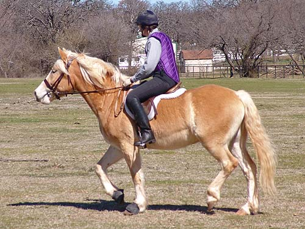
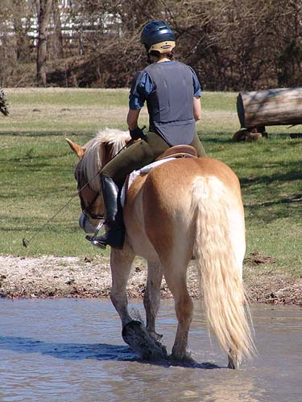

Niles' First Cross
Country Schooling at Quail Run Farm
Niles has been off work for a few
months now. Right before Christmas he cut himself between his front legs
right by the girth. It's finally healed to the point that the girth doesn't
bother it.
Some trot warm up. He wasn't sure
if he needed to be forward.
Crossing some creeks. He sometimes
needed a lead, but usually listened to Chrissie.

He really seemed happy to be out and
seeing things.
He does very well in company.
Trotting along with the group.
A little jump over the ditch.
He was very brave with the cows,
and walked among them with no fear.
He went back and gave support to the
horse that was worried about the cows.
He was willing to follow Mo
over the jump, but wasn't very graceful.
The second time he was relaxed and
took it more like a canter stride.

We traded out, and I rode Niles on
the course for a while.
He's got a lot to learn, but
he's solid and safe, even in new situations.
Jumping up the bank.
He was willing over the jumps, and
got a little more forward.
This one I was left behind a little.
I cued him for a canter at the take off, and we landed galloping on. Not
what I asked for, so I had to stop him quickly, but I bet we could have
covered some ground.
Chrissie back aboard. He went well
for both of us.
Over the ditch.
He didn't care if the cows were laying
down or standing up.
Walking in with Mo.
He got a little sweaty. It was a warm
day and he's got a lot of hair.